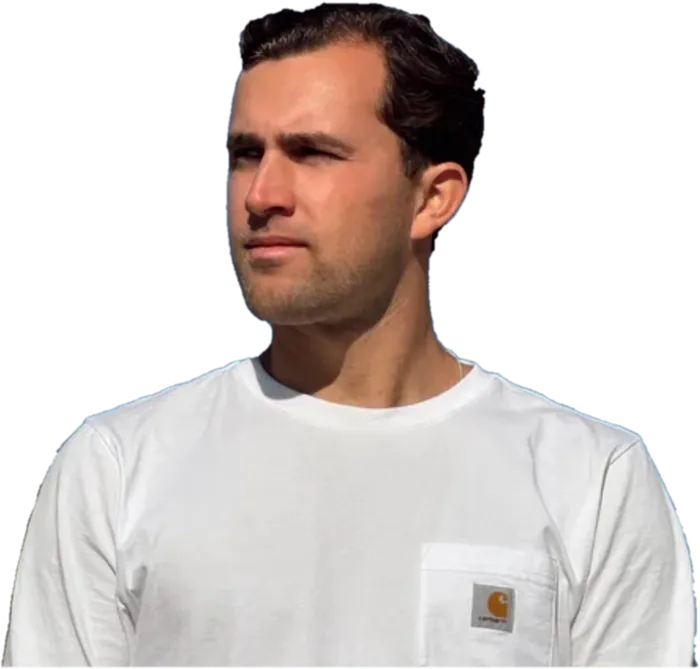

Nieuw · 100%
DJ · Producer · Zanger
Van het eerste glas tot de laatste dans.
Check je datum →Feesten · events · samenwerkingen
Sinds 2013 sta ik achter de draaitafel. Begonnen met house, en gaandeweg mijn eigen sound gevonden: Nederlands met een vleugje Spaans. Sinds 2019 maak ik ook mijn eigen muziek, als producer en zanger.
Bruiloft, bedrijfsfeest of studentenfeest: ik lees de zaal en bouw de avond op, vaak met een live saxofonist erbij.
Biografie →


Van studio tot dansvloer. Bekijk de clips en zie hoe Tresor een zaal in beweging krijgt.
Alles op YouTube
Feestje gepland of een idee voor een track? Check je datum of stuur me een bericht. Prijs op aanvraag.
![Videoclip [Clip 3]](images/pressfoto.webp)